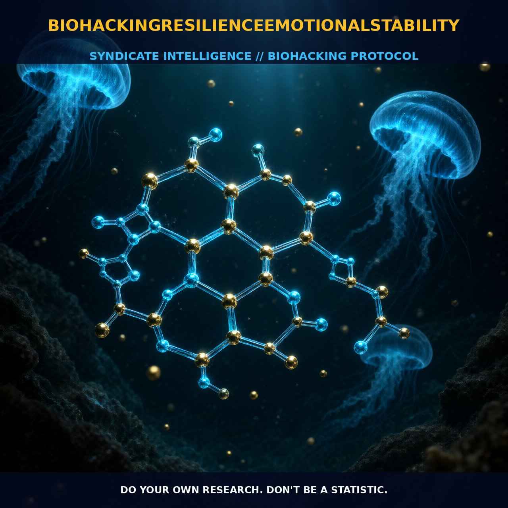

Optimizing Resilience and Emotional Stability Through Biohacking

1. The Mechanism
Biohacking resilience and emotional stability involves leveraging a comprehensive understanding of the physiological and psychological processes that underpin these traits. The mechanics of biohacking in this context revolve around optimizing cognitive function, reducing stress, and enhancing emotional resilience. This is achieved through a combination of dietary modifications, lifestyle changes, and the use of supplements and technologies.
Understanding the foundational mechanisms is crucial. Emotional stability and resilience are influenced by a complex interplay of neurochemicals, hormones, and physiological processes. For instance, cortisol, a stress hormone, plays a key role in the body's response to stress. High levels of cortisol can lead to reduced emotional stability, while optimal levels can enhance resilience. Similarly, neurotransmitters like serotonin and dopamine are crucial for mood regulation and emotional well-being. By modulating these systems, biohackers aim to achieve a balanced state that supports emotional stability and resilience.
Moreover, the mechanics of biohacking involve monitoring and adjusting various biomarkers such as blood glucose levels, sleep patterns, and heart rate variability. These biomarkers provide valuable insights into the body's physiological state and can be used to fine-tune interventions for optimal emotional stability and resilience. For example, maintaining stable blood glucose levels can help reduce mood swings and improve cognitive function, thereby enhancing emotional stability.
2. Biological Leverage
The biological leverage in biohacking resilience and emotional stability is multi-faceted, involving several key biological pathways and systems. One critical pathway is the hypothalamic-pituitary-adrenal (HPA) axis, which regulates the body's stress response. Optimizing this axis through dietary and lifestyle interventions can help reduce chronic stress and enhance emotional resilience. For instance, consuming adaptogenic herbs like ashwagandha and rhodiola can help modulate the HPA axis, thereby reducing cortisol levels and enhancing emotional stability.
Another important system is the immune system, which plays a significant role in emotional well-being. Chronic inflammation can lead to increased stress and reduced emotional resilience. By incorporating anti-inflammatory foods and supplements, such as omega-3 fatty acids and turmeric, biohackers can reduce systemic inflammation and improve emotional stability. Additionally, maintaining a healthy gut microbiome through probiotics and prebiotics can support mental health by influencing neurotransmitter production and reducing inflammatory markers.
Furthermore, the role of the brain's reward system in emotional stability is noteworthy. The release of dopamine and serotonin in response to rewarding stimuli can enhance mood and emotional resilience. Biohackers often use techniques such as intermittent fasting, cold exposure, and other hormetic stressors to stimulate the release of these neurotransmitters. Additionally, cognitive behavioral techniques and mindfulness practices can help individuals manage stress and enhance emotional resilience by promoting a balanced state of mind.
3. Tactical Implementation
Implementing a biohacking regimen for resilience and emotional stability involves a range of practical steps and considerations. Firstly, dietary modifications play a crucial role. Consuming a balanced diet rich in whole foods, omega-3 fatty acids, and antioxidants can support optimal brain function and emotional well-being. Low-to-moderate amounts of protein and healthy fats can also help stabilize blood sugar levels, reducing mood swings and enhancing emotional stability.
Incorporating supplements such as ashwagandha, rhodiola, and magnesium can further support emotional resilience. These supplements have been shown to modulate the HPA axis and reduce stress, thereby enhancing emotional stability. Additionally, regular physical activity, particularly aerobic exercise, can boost mood and cognitive function, contributing to improved emotional resilience. Biohackers often track their exercise routines and adjust them based on their individual needs and responses.
Sleep quality is another critical factor. Ensuring adequate sleep and maintaining a consistent sleep schedule can significantly enhance emotional stability and resilience. Techniques such as blue light filtering glasses, melatonin supplementation, and relaxation exercises can help improve sleep quality. Moreover, mindfulness practices and neurofeedback can help individuals manage stress and enhance emotional resilience by promoting mental clarity and emotional balance.
Lastly, monitoring and adjusting biomarkers such as heart rate variability, blood glucose levels, and cortisol levels can provide valuable insights into an individual's physiological state. Biohackers often use wearable technology and other tools to track these metrics and make data-driven adjustments to their regimens. By consistently monitoring and fine-tuning these factors, biohackers can achieve a state of optimal emotional stability and resilience.
Prostar Life Hack
Incorporate ashwagandha and rhodiola supplements to modulate the HPA axis, reducing cortisol levels and enhancing emotional stability.
[ AUTHOR: LEAD TECHNICAL RESEARCHER ]